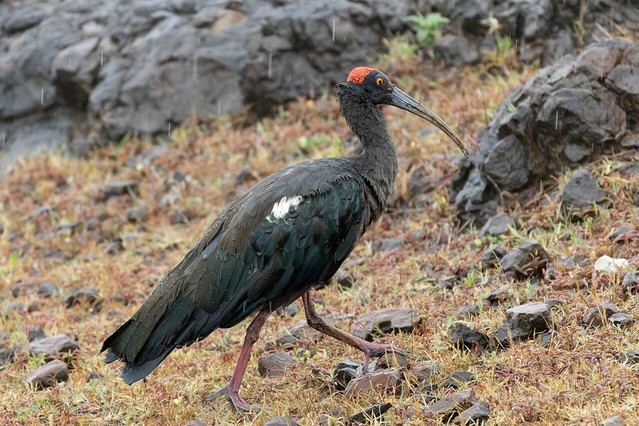

काला बुज़ाRed-naped Ibis
Pseudibis papillosa · Threskiornithidae · BRD-0079

- Scientific name
- Pseudibis papillosa (Temminck, 1824)
- Family
- Threskiornithidae
- Hindi
- काला बुज़ा / करांकुल
- Local names
- kala buza, kala buja, karankul, karankal, buza
- Status here
- native
- IUCN
- VU
- Review
- audited and independently read
When to look कब देखें
Present all year.
Uses and possibilities उपयोग और संभावनाएँ
Drawn from the documented uses in the profile below, where each is labelled traditional, current or a research lead. All uses →
काला बुज़ा / Red-naped Ibis
Pseudibis papillosa (Temminck, 1824) — Threskiornithidae
काला बुज़ा — पूर्वी उत्तर प्रदेश की तालाबों और धान के खेतों में एक बड़ी, काली चिड़िया, जिसके सिर के पिछले हिस्से पर चमकीली लाल रंग की नंगी त्वचा होती है — यही इसके नाम का कारण है। यह मजबूत, धनुषाकार चोंच से मिट्टी और पानी में से कीड़े और अन्य भोजन निकालती है। अक्सर छोटे झुंड में घूमती है।
Quick Identification त्वरित पहचान
| Feature | Description |
|---|---|
| Size | Large ibis; 66–76 cm tall |
| Plumage | Entirely glossy black-green |
| Head | Bare reddish patch on crown and hind-neck area |
| Bill | Long, curved, dark; slightly shorter than Black-headed Ibis |
| Legs | Reddish or dark |
| Eyes | Dark iris |
| Behaviour | Feeds in small flocks; walks through grassland and water margins |
Field tip: A large, all-black ibis with a glossy green sheen and a distinctive red patch on the back of the head — is a Red-naped Ibis. The red nape patch is visible even from a distance. Usually in smaller groups than Black-headed Ibis.
हिंदी — कैसे पहचानें:
काली चिड़िया, चमक वाली।
सिर के पिछले हिस्से पर लाल धब्बा या पैच।
लंबी, धनुषाकार काली चोंच।
छोटे झुंड में चलती है।
Morphology आकारिकी
Biometrics:
| Measurement | Range |
|---|---|
| Total length | 660–760 mm |
| Wing (flattened chord) | 380–420 mm |
| Tail | 180–220 mm |
| Bill | 120–145 mm |
| Tarsus | 80–100 mm |
| Weight | 750–950 g |
Size: 66–76 cm tall; wingspan 105–125 cm. Weight 750–1000 g. Slightly larger on average than Black-headed Ibis.
Plumage: Entirely glossy black-green. The plumage has an iridescent sheen in bright light, appearing green and violet.
Head: Bare reddish or pinkish skin on the crown and hind-neck area — extends further down than in Black-headed Ibis, forming a distinctive nape patch.
Bill: Long, curved downward; dark grey or blackish. Slightly shorter and more robust than Black-headed Ibis.
Legs: Reddish or dark; medium length.
Eyes: Dark iris.
Breeding plumage: Becomes more intensely coloured; the red patch on head may deepen.
Sexes: Identical. Juveniles duller, black without the green iridescence; red nape patch less distinct.
Vocalisations. Three main call types:
- Alarm call: A loud, harsh croak or nasal honk — naah-naah — given when disturbed; frequency 1.0–2.5 kHz.
- Contact call: Low, soft grunting sounds while feeding in flocks.
- Territorial call: Loud honking at roosts, establishing group cohesion.
हिंदी: तेज़ गर्जन जैसी आवाज़। झुंड में अक्सर सुनाई देती है।
Ecological Role पारिस्थितिक भूमिका
Invertebrate specialist: Red-naped Ibises feed on a similar range to Black-headed Ibis:
- Earthworms and large soil invertebrates
- Aquatic insects and dragonfly nymphs
- Crabs and mollusks
- Grasshoppers and crickets
- Frogs, tadpoles, and small fish
Probing forager: Uses the curved bill to probe soft soil and mud. Often feeds in smaller, more cohesive flocks than Black-headed Ibis.
Agricultural pest control: Feeds on grasshoppers and crickets in paddy fields, providing natural pest control.
Habitat indicator: Presence indicates functioning wetland and grassland systems with healthy invertebrate populations.
Colonial nester: Often shares heronries with other storks, herons, and ibises.
हिंदी: यह केंचुए, कीड़े, और छोटी मछलियाँ खाता है। धान के खेत में मददगार है।
Life Cycle / Phenology जीवन चक्र
Resident: Present year-round in eastern UP; no migration.
Breeding: June–October (monsoon and post-monsoon). Colonial nester, sometimes with other ibis species.
Nesting: Platform nest in tall trees, similar to Black-headed Ibis. Trees: tamarisk, peepal, banyan, neem.
Eggs: 3–4 pale greenish eggs. Both parents incubate ~21 days.
Chicks: Altricial; fledge at ~5 weeks.
Roosting: Smaller, more cohesive flocks than Black-headed Ibis; communal roosts in tall trees.
हिंदी: पूरे साल रहता है। मानसून में प्रजनन करता है। छोटे झुंड में रहता है।
Prey भोजन
| Prey | Hindi | Capture Method |
|---|---|---|
| Earthworms | केंचुए | Probing in soil |
| Grasshoppers | टिड्डे | Gleaning from plants |
| Aquatic insects | जल कीड़े | Probing in water |
| Crabs and mollusks | केकड़े, घोंघे | Extraction from burrows |
हिंदी: मिट्टी में चोंच डालकर केंचुए निकालता है।
Conservation Status संरक्षण स्थिति
IUCN Status: Vulnerable (VU)
Wildlife Protection Act, 1972: Listed under Schedule IV (Protected) of the Wildlife (Protection) Act, 1972, as amended in 2022. Killing or harming a Red-naped Ibis is illegal in India.
Threats: Wetland drainage; agricultural intensification; pesticide use; loss of grassland habitat; disturbance at colonies. The species is declining range-wide.
Conservation importance: Eastern UP is an important stronghold for Red-naped Ibis conservation in India.
हिंदी: यह पक्षी दुर्लभ हो रहा है और कानून में संरक्षित है।
Agricultural / Human Relevance कृषि और मानव संबंध
Pest control: Significant consumer of grasshoppers and crickets in paddy fields, particularly valuable during monsoon months.
Declining status: The species is not well-known locally and lacks the cultural protection of larger storks and cranes. No special tradition surrounds it.
हिंदी: यह कीड़ों को खाता है और खेती में मददगार है।
Expected Locally स्थानीय रूप से अपेक्षित
Not a field record. Written from published accounts for eastern Uttar Pradesh. No confirmed local sighting yet — if you have seen it, that is what the atlas needs.
अभी तक स्थानीय पुष्टि नहीं। यह विवरण प्रकाशित स्रोतों से है।
Uncommon to locally common year-round in suitable wetlands and grasslands across Basti district. Less abundant than Black-headed Ibis. Smaller flocks reported along river margins and wet grassland patches, particularly during breeding season. Active heronries with Red-naped Ibis present in multiple colonies.
Distribution वितरण
Global range: Widespread across the Indian subcontinent and Southeast Asia, from Pakistan through India to Indonesia.
In India: Found throughout the plains and some hilly areas, though declining.
In Uttar Pradesh: Once fairly common; now concentrated mainly in the eastern districts and wetlands along major rivers.
In Basti district / eastern UP: Present year-round in suitable habitat, particularly along the Ghaghra and Rapti river systems.
Research Questions शोध प्रश्न
Anyone can investigate these | कोई भी इन प्रश्नों की जाँच कर सकता है
- How do Red-naped Ibis flocks differ in size from Black-headed Ibis flocks? / झुंड का आकार कितना होता है? — Compare flock sizes monthly.
- Where are active heronries with Red-naped Ibis in your area? / घोंसले कहाँ हैं? — Map breeding colonies in breeding season.
- What is the diet composition? / क्या खाते हैं? — Observe and document feeding.
- Are populations declining in your area? / संख्या में कमी आई है? — Interview elders; compare with old records.
- How does behaviour differ from Black-headed Ibis? / काले बुज़े और मुंडे में अंतर? — Compare foraging and social behaviour directly.
Similar Species मिलती-जुलती प्रजातियाँ
| Species | How to tell apart | हिंदी |
|---|---|---|
| Black-headed Ibis | White body; fully black head (not just nape); larger flocks | सफेद शरीर, पूरा काला सिर |
| Asian Woolly-necked Stork | Larger; stork not ibis; white on neck and collar | बड़ा, सारस, सफेद पट्टी |
Field rule: A large, glossy-black ibis with a red nape patch and smaller flock size — is a Red-naped Ibis. The red nape is diagnostic; Black-headed Ibis has no red at all.
Taxonomy & Classification वर्गीकरण
Original description. Pseudibis papillosa was described by Coenraad Jacob Temminck in 1824 in his Planches Coloriées d'Oiseaux. Type locality: India. The genus Pseudibis contains only two species of black ibises with distinctive head markings.
Subspecies. Monotypic — no subspecies are currently recognised. The species is geographically variable but boundaries are not formally recognized.
Family and order placement. Order Pelecaniformes, family Threskiornithidae. The genus Pseudibis contains 2 species — the Red-naped Ibis and the White-shouldered Ibis (P. bernieri) of Madagascar.
Phylogenetic notes. Molecular studies show that Pseudibis papillosa is not closely related to the black-headed ibises (Threskiornis), despite superficial similarity. The two genera diverged early in ibis evolution.
IUCN status rationale. Assessed as Vulnerable (VU). Declining populations across the range due to wetland loss and habitat degradation. Eastern UP remains an important conservation area for this species.
Photo Gallery फोटो गैलरी
फोटो निर्देश: घास के मैदान और तालाब के किनारे झुंड में दिखते हैं। सिर पर लाल पैच को स्पष्ट करने के लिए क्लोज़-अप फोटो लें।
Photos needed आवश्यक फोटो
- [ ] Flock in grassland showing size and behaviour (झुंड)
- [ ] Close-up showing red nape patch (सिर पर लाल पैच)
- [ ] In flight (उड़ान में)
- [ ] Heronry with nesting birds (घोंसले)
- [ ] Feeding in water/mud (खाना खोजते हुए)
No photos yet — add field photos to media/species/red_naped_ibis/ and run node scripts/sync_photos.js.
Atlas Connections संबंधित प्रजातियाँ
- Black-headed Ibis — close relative; sometimes found together
- Painted Stork — shares heronries and wetland habitat
- Asian Woolly-necked Stork — fellow large water bird
References संदर्भ
- Temminck, C.J. (1824). Planches Coloriées d'Oiseaux. Vol. 1. Lithographie de Crapelet, Paris. [original description]
- Ali, S. & Ripley, S.D. (1987). Handbook of the Birds of India and Pakistan. Vol. 1. Oxford University Press, New Delhi.
- Grimmett, R., Inskipp, C. & Inskipp, T. (2011). Birds of the Indian Subcontinent. 2nd ed. Christopher Helm, London.
- BirdLife International (2023). Pseudibis papillosa. IUCN Red List of Threatened Species.
- GBIF Occurrence Data — Pseudibis papillosa, India (2024).
- Rasmussen, P.C. & Anderton, J.C. (2005). Birds of South Asia: The Ripley Guide. Smithsonian Institution, Washington.
Source file: species/fauna/birds/red_naped_ibis.md